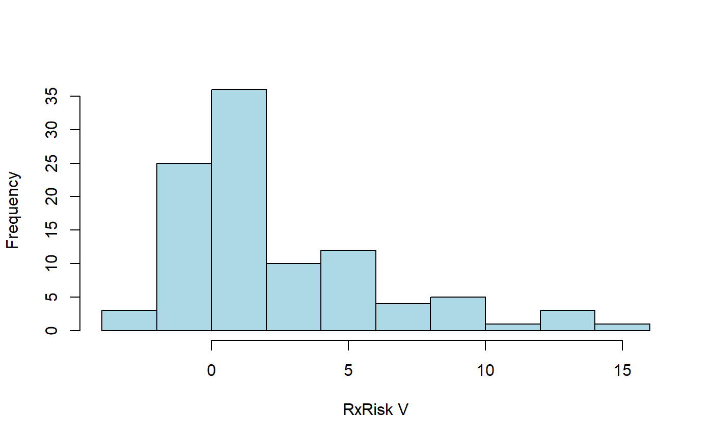
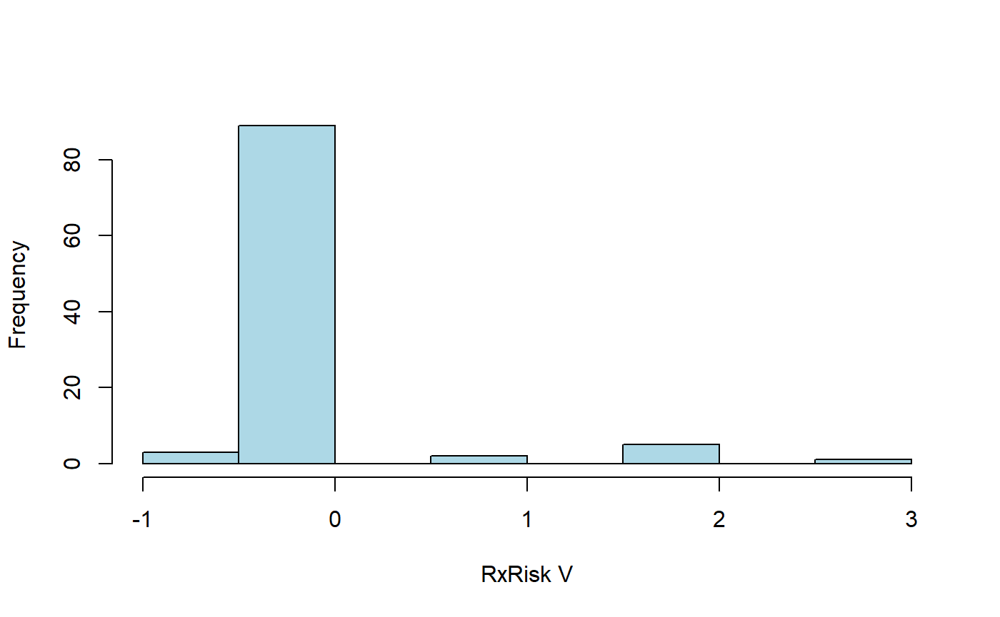
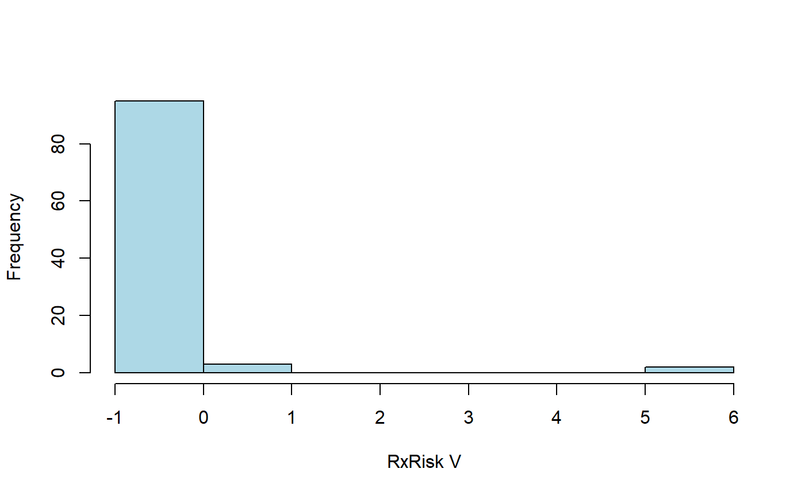
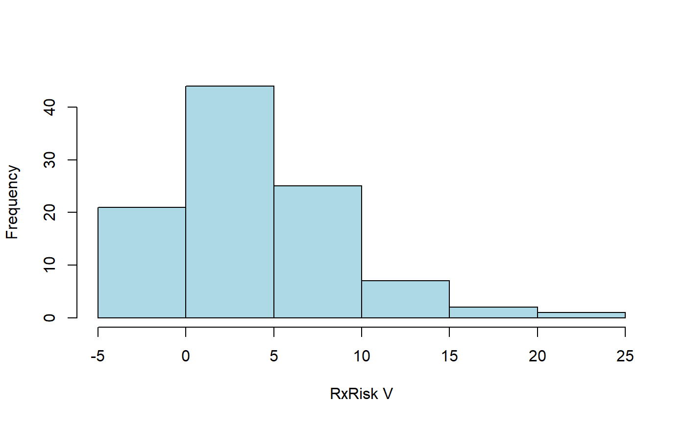

The concept of co-morbidity is often attributed to Feinstein:
[T]he term co-morbidity will refer to any distinct additional clinical entity that has existed or that may occur during the clinical course of a patient who has the index disease under study.
The coder package contains some default classcodes objects for co-morbidity:
library(coder) cl
| classcodes | regex | indices | |
|---|---|---|---|
| 1 | charlson | icd10, icd9cm_deyo, icd9cm_enhanced, icd10_rcs, icd8_brusselaers, icd9_brusselaers | index_charlson, index_deyo_ramano, index_dhoore, index_ghali, index_quan_original, index_quan_updated |
| 2 | cps | icd10 | index_only_ordinary |
| 3 | elixhauser | icd10, icd10_short, icd9cm, icd9cm_ahrqweb, icd9cm_enhanced | index_sum_all, index_sum_all_ahrq, index_walraven, index_sid29, index_sid30, index_ahrq_mort, index_ahrq_readm |
| 8 | rxriskv | pratt, caughey, garland | index_pratt, index_sum_all |
The Charlson and Elixhauser co-morbidity indices are two examples used in medical research. Each index consist of several medical conditions, possibly summarized by a (weighted) index. Each condition is defined by a set of medical codes, such as described by Quan et al. and many others. Different versions of the International Classification of Diseases (ICD) codes are often used.
The coder package provides substantial functionality for both Charlson and Elixhauser, although we will not focus on those indices here, since several other R packages have similar implementations as well:
icd and comorbidity are both good packages well suited for their purpose based on effective implementations. medicalrisk can be used with ICD-9-CM codes but is not up-to-date with the latest version of ICD-10. comorbidities.icd10 and icdcoder are not actively developed or maintained.
One advantage with the coder package is the great flexibility for combining different sets of codes (ICD-8, ICD-9, ICD-9-CM and ICD-10 etc as given by the “regex” column above), with different sets of weighted indices.
Another advantage of the coder package is the inclusion of additional classifications, such as the pharmacy-based case-mix instrument Rx Risk V. We will use this classification in an example. This classification, in contrast to Charlson and Elixhauser, relies on medical prescription data codified by the Anatomic Therapeutic Chemical classification system (ATC).
As for all classcodes objects in the package, additional information and references are found in the object documentation (?rxriskv).
ex_people contains 100 patients (with random names) who received surgery at given (random) dates:
| name | event |
|---|---|
| Miller, Von Buddenbrock | 2019-05-03 |
| Enriquez, Anthony | 2019-10-15 |
| al-Dib, Farhaan | 2019-12-11 |
| Martinez, Alison | 2019-09-17 |
| el-Masri, Junaid | 2019-07-06 |
| Sam, Niki | 2019-12-23 |
Let’s generate some sample ATC data where each patient can have zero, one, or several codes prescribed at different dates:
set.seed(123) N
| id | code | code_date |
|---|---|---|
| al-Dawood, Hasan | N05AD09 | 2013-01-13 |
| Mendoza, Jessica | C10AX01 | 2013-02-20 |
| Rice, Jamissa | C01EB23 | 2018-09-08 |
| al-Asmar, Abdur Raheem | M01AE53 | 2015-09-28 |
| Bivings, Devin | R05DB13 | 2016-05-02 |
| Harder, Rio | R01AD09 | 2013-08-04 |
A first attempt to calculate the Rx Risk V score for each patient:
default Classification based on: regex_pratt knitr::kable(head(default))
| name | event | Alcohol dependence | Allergies | Anticoagulants | Antiplatelets | Anxiety | Arrhythmia | Benign prostatic hyperplasia | Bipolar disorder | Chronic airways disease | Congestive heart failure | Dementia | Depression | Diabetes | Epilepsy | Gastrooesophageal reflux disease | Glaucoma | Gout | Hepatitis B | Hepatitis C | HIV | Hyperkalaemia | Hyperlipidaemia | Hypertension | Hyperthyroidism | Hypothyroidism | Incontinence | Inflammation/pain | Irritable bowel syndrome | Ischaemic heart disease: hypertension | Ischemic heart disease: angina | Liver failure | Malignancies | Malnutrition | Migraine | Osteoporosis/Paget’s | Pain | Pancreatic insufficiency | Parkinson’s disease | Psoriasis | Psychotic illness | Pulmonary hypertension | Renal disease | Smoking cessation | Steroid-responsive disease | Transplant | Tuberculosis | index_pratt | index_sum_all |
|---|---|---|---|---|---|---|---|---|---|---|---|---|---|---|---|---|---|---|---|---|---|---|---|---|---|---|---|---|---|---|---|---|---|---|---|---|---|---|---|---|---|---|---|---|---|---|---|---|---|
| Alexander, Bethany | 2019-03-07 | FALSE | FALSE | FALSE | FALSE | FALSE | FALSE | FALSE | FALSE | FALSE | FALSE | FALSE | FALSE | TRUE | FALSE | FALSE | FALSE | FALSE | TRUE | FALSE | TRUE | FALSE | FALSE | FALSE | FALSE | FALSE | FALSE | TRUE | FALSE | TRUE | TRUE | FALSE | FALSE | FALSE | FALSE | FALSE | FALSE | FALSE | FALSE | FALSE | FALSE | FALSE | FALSE | FALSE | FALSE | FALSE | FALSE | 2 | 6 |
| Arguello, Tommy | 2019-12-03 | FALSE | FALSE | TRUE | FALSE | FALSE | FALSE | FALSE | FALSE | FALSE | FALSE | FALSE | FALSE | TRUE | FALSE | FALSE | FALSE | FALSE | FALSE | FALSE | FALSE | FALSE | FALSE | FALSE | FALSE | FALSE | FALSE | FALSE | TRUE | FALSE | FALSE | FALSE | FALSE | FALSE | FALSE | FALSE | FALSE | FALSE | FALSE | TRUE | FALSE | FALSE | FALSE | FALSE | FALSE | FALSE | FALSE | 3 | 4 |
| Austin, Maeve | 2019-11-26 | FALSE | FALSE | FALSE | FALSE | FALSE | FALSE | FALSE | FALSE | FALSE | TRUE | FALSE | FALSE | TRUE | TRUE | FALSE | FALSE | FALSE | FALSE | FALSE | TRUE | FALSE | FALSE | FALSE | FALSE | FALSE | FALSE | FALSE | TRUE | FALSE | FALSE | FALSE | FALSE | TRUE | FALSE | FALSE | FALSE | FALSE | FALSE | FALSE | TRUE | FALSE | FALSE | FALSE | FALSE | FALSE | FALSE | 10 | 7 |
| Ball, Rockelle | 2019-04-14 | FALSE | FALSE | FALSE | FALSE | FALSE | FALSE | FALSE | FALSE | FALSE | FALSE | FALSE | FALSE | TRUE | TRUE | FALSE | FALSE | FALSE | FALSE | FALSE | TRUE | FALSE | FALSE | TRUE | TRUE | FALSE | FALSE | FALSE | FALSE | FALSE | FALSE | FALSE | FALSE | FALSE | FALSE | FALSE | FALSE | FALSE | FALSE | FALSE | TRUE | FALSE | FALSE | FALSE | FALSE | FALSE | FALSE | 9 | 6 |
| Bean, Haileigh | 2019-05-13 | FALSE | FALSE | FALSE | FALSE | FALSE | FALSE | FALSE | FALSE | FALSE | FALSE | FALSE | FALSE | TRUE | FALSE | FALSE | FALSE | FALSE | FALSE | FALSE | TRUE | FALSE | FALSE | FALSE | FALSE | FALSE | FALSE | FALSE | FALSE | TRUE | FALSE | FALSE | FALSE | FALSE | FALSE | FALSE | FALSE | FALSE | FALSE | FALSE | FALSE | FALSE | TRUE | FALSE | FALSE | FALSE | FALSE | 7 | 4 |
| Beehler, Kelly | 2019-04-02 | FALSE | FALSE | FALSE | FALSE | TRUE | FALSE | FALSE | FALSE | FALSE | FALSE | FALSE | FALSE | TRUE | FALSE | FALSE | FALSE | FALSE | FALSE | FALSE | FALSE | FALSE | FALSE | TRUE | TRUE | FALSE | FALSE | FALSE | FALSE | FALSE | FALSE | FALSE | FALSE | TRUE | FALSE | FALSE | FALSE | FALSE | FALSE | FALSE | TRUE | FALSE | FALSE | FALSE | FALSE | FALSE | FALSE | 10 | 6 |
The first two columns are identical to ex_people (except row order, which could be preserved by sort = FALSE). Additional columns indicate whether patients had any of the individual co-morbidities identified by Rx Risk V. The last columns contain summarized index values (weighted sums of individual co-morbidities). Let’s summarize the distribution of index_pratt (Pratt et al.):
hist2

Note however that some prescriptions might have been filed long before surgery, or even after. Those are less relevant for co-morbidities at surgery. We can limit the categorization to a time window of one year prior to surgery.
hist2(
categorize(
ex_people, ex_atc, rxriskv, id = "name",
codify_args = list(date = "event", days = c(-365, -1))
)
)
#> Classification based on: regex_pratt
Co-morbidities are identified from ATC codes captured by regular expression. Codes identified by regex_pratt are used by default. Let’s use an alternative version adopted from Caughey.
hist2(
categorize(
ex_people, ex_atc, rxriskv, id = "name",
codify_args = list(date = "event", days = c(-365, -1)),
cc_args = list(regex = "regex_caughey")
)
)
Let’s assume that our code data is not as clean as simulated above.
s
| id | code | code_date |
|---|---|---|
| al-Dawood, Hasan | t6E?N05AD09Y8 | 2013-01-13 |
| Mendoza, Jessica | i4D?C10AX01U8 | 2013-02-20 |
| Rice, Jamissa | w2A.C01EB23N2 | 2018-09-08 |
| al-Asmar, Abdur Raheem | g9W.M01AE53A1 | 2015-09-28 |
| Bivings, Devin | u3P.R05DB13D4 | 2016-05-02 |
| Harder, Rio | e9I?R01AD09Q7 | 2013-08-04 |
sum(categorize(ex_people, ex_atc, rxriskv, id = "name")$index_pratt) #> Classification based on: regex_pratt #> [1] 0
Thus, no codes are recognized (every one got index = 0). By default, codes are only recognized if found immediate in its corresponding column. This can be controlled by arguments start and stop specified via cc_args:
hist2(
categorize(
ex_people, ex_atc, rxriskv, id = "name",
cc_args = list(start = FALSE, stop = FALSE)
)
)
#> Classification based on: regex_pratt